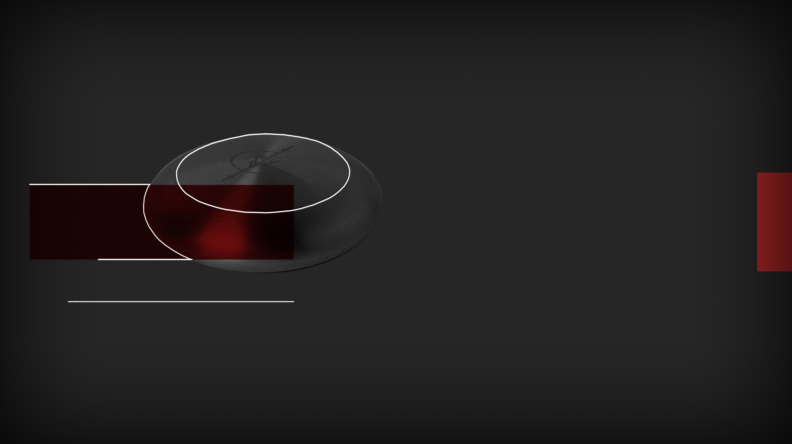

SPLITTED
SPLITTED

On the other, something way more fascinating: on the surface of the device someone carved a drawing, a symbol of some sort, something I never saw before. It's composed of a string with a half moon in the middle and an arrow that points down in the center of it.
I run my fingers on the surface to feel the light engraving. It tickles my fingertips. I turn it over and try clicking on the buttons, but nothing happens, not even a sound exits from it.